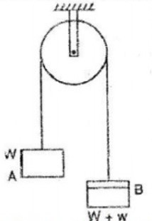

Q1
Two equal weights ‘W’ Weight are connected by light (weightless) string passing over a friction less pulley. A small weight ‘w’ Additional Weight is added to one side as shown in figure, causing that the weight to fall. Determine the acceleration of the system assuming that the weight start from rest.